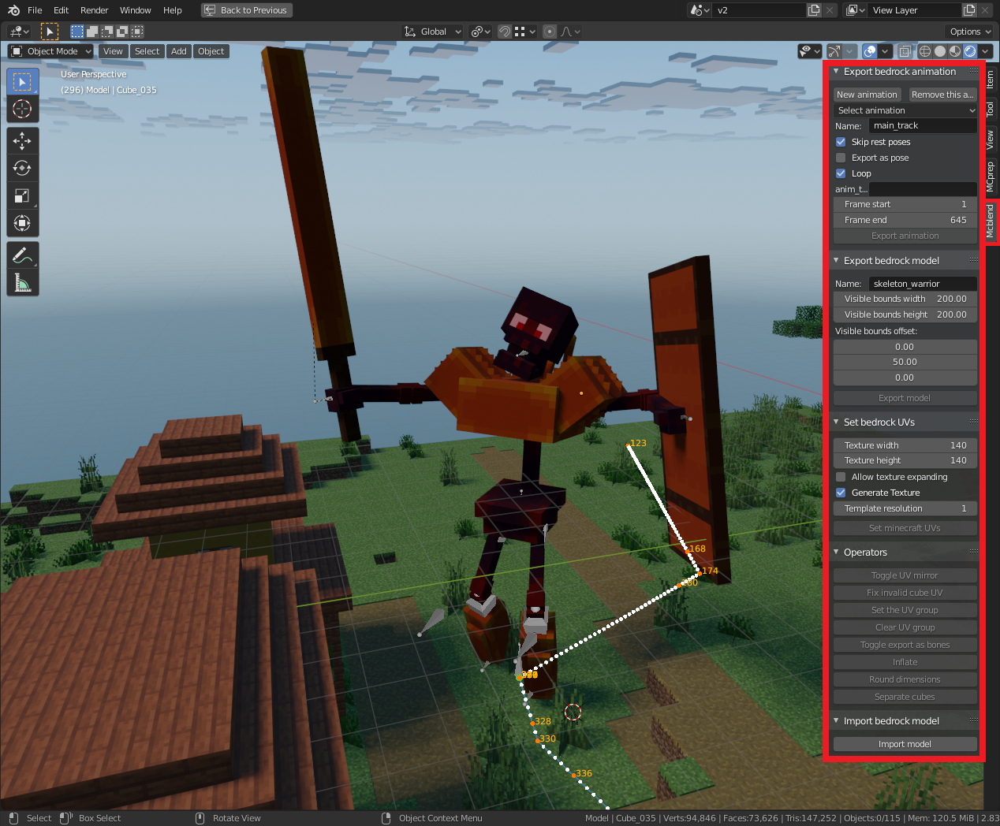

Basics
GUI

After installation and enabling the add-on there should be an additional tab called "Mcblend" on the right side of 3d-viewport (default key to open/close the sidebar in Blender is N). Opening this tab reveals panels that are used to access most of the functionality of the addon. Every panel is described further in the user manual in panels section.
Additionally, you can find some new options in the File -> Export and
File -> Import menus.
Limitations
Cuboids only
Minecraft bedrock edition models support only cuboids (unless you use an experimental feature which is not supported yet). You cannot use other shapes for your model. Mcblend uses bounding boxes to create cuboids from meshes for the exported model. Every cube in a model must be a separate mesh. Ideally the mesh should have exactly the same shape as it's bounding box. Meshes with other shapes will be aproximated to the bounding box shape or if that fails the whole model won't be exported.
Note
The best way to avoid problems with invalid meshes is to always use the "Object mode" for editing the model and always scale the cuboids in their local space.
Additionally you can enable drawing the bounding box in object
Object properties -> Viewport display -> Bounds
Wide angles in animations
Blender supports multiple rotation modes and uses different types of rotation for different kinds of objects. For example rotations of bones in armatures use quaternions but meshes use Euler (XYZ) angles. Additionally users can choose to use different rotation modes for each object. Minecraft uses Euler angles but the axes are set up differently than in Blender so there is no direct way to use the Minecraft coordinates system in Blender.
Mcblend can export models and animations regardless of used rotation modes. Internally everything is converted into quaternions and then into Minecraft coordinate system when it's needed. The design choice of using quaternions internally was motivated by the fact that quaternions help avoiding some computation errors. Unfortunately, Quaternions number system has only one unique representation for every rotation orientation so you can't distinguish full turn from no turn at all (0° = 360°).
The consequence of choosing quaternions is that it's impossible to have rotation wider than 180° between two keyframes. When an animation is exported Mcblend translates quaternions into Euler angles and picks the rotation which requires as little movement as possible to end up in a new pose.
Note
A quick fix to this problem is adding additional keyframes for rotations that don't look right.
Names
The addon does not allow the usage of names that have dots in it. Everything after the first dot in the name of the object is ignored during the conversion. You can use dots in the names of the objects which aren't converted into bones in exported Minecraft model. Conversion rules are described in the next section of the user manual.
Custom properties
Mcblend uses custom object properties to store some data about the Minecraft model:
mc_uv_group- used to group cubes with the same width, depth and height to assign same UV-mapping to them.mc_is_bone- marks an object as a Minecraft bone (it's not necessary in most cases).mc_inflate- the "inflate" value of cube in the Minecraft model.mc_mirror- marks that the object has the "mirror" property set to true. This is used for generating the UV. If you manually map the UV in such way that the it has the same shape as mirrored UV of a cube in minecraft model than Mcblend will automatically detect that and add the mirror property to the exported model.
You can view these properties in Object properties -> Custom properties